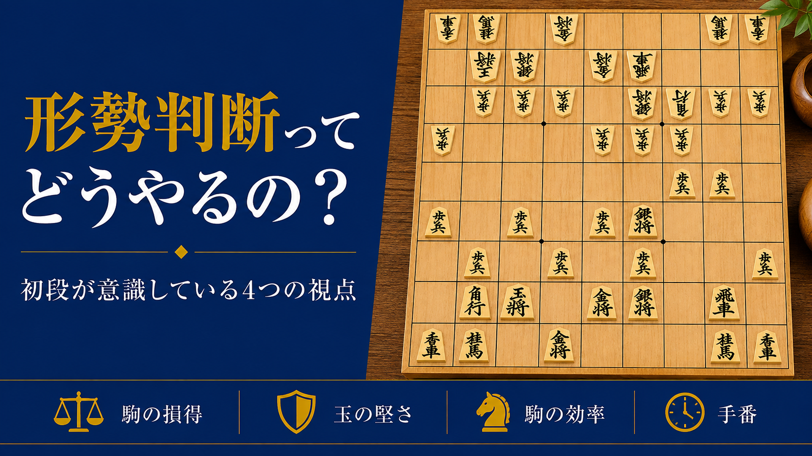

形勢判断ってどうやるの?初段が意識している4つの視点

「初段の壁」の記事で、級位者と初段の差を分けるポイントとして「読みの深さ」「手筋の引き出し」「大局観」の3つを挙げました。これまでの記事で読みの深さ(詰将棋)、手筋の引き出しについて解説してきたので、今回は最後の一つ、大局観についてお伝えします。
大局観とは何か
大局観とは、一手一手の損得だけでなく、盤面全体を見て「今の局面がどちらに有利か」「攻めるべきか受けるべきか」を判断する力のことです。
級位者のうちは、目の前の一手に集中するあまり、盤面全体の状況を見失いがちです。大局観が身につくと、今何をすべきかの優先順位がはっきりし、無駄な手を減らせるようになります。
初段が意識している4つの視点
① 駒の損得
最も分かりやすい判断材料です。今、自分と相手でどちらが多くの駒(持ち駒を含む)を持っているかを確認します。ただし、駒の損得だけで判断するのは危険です。他の3つと合わせて総合的に見る必要があります。
② 玉の堅さ・安全度
自分の玉と相手の玉、どちらがより危険な状態にあるかを見ます。駒得していても、自分の玉が薄い(守りが少ない)状態では、形勢が良いとは言えません。逆に、多少駒損していても、相手の玉が薄ければ、攻め続けることで挽回できる可能性があります。
③ 駒の効率
盤上の駒が、実際にどれだけ機能しているかを見ます。同じ「飛車を持っている」状態でも、広い場所で自由に動ける飛車と、味方の駒に囲まれて動けない飛車とでは、価値がまったく違います。駒の数だけでなく、その駒が今どれだけ働いているかを意識しましょう。
④ 手番
「次にどちらが指す番か」も、重要な判断材料です。手番を持っている側は、相手より一手早く攻めたり、自陣を整えたりできます。同じような局面でも、手番があるかないかで、有利不利が入れ替わることがあります。
局面によって重視するポイントは変わる
この4つの視点は、常に同じ重みで見るものではありません。序盤・中盤では駒の効率や玉の堅さ、手番が特に重要になり、駒の損得はまだそれほど大きな差になりません。一方、終盤に近づくほど玉の安全度(寄せられるか、寄せられないか)の比重が大きくなり、多少の駒損よりも玉に迫れるかどうかが優先されることも多くなります。
4つの視点をどう使うか
対局中、数手ごとに一度手を止めて、この4つを順番に確認する習慣をつけてみてください。
- 駒の損得はどちらが有利か
- 玉の堅さ・安全度はどちらが高いか
- 駒の効率はどちらが良いか
- 手番はどちらにあるか
序盤・中盤なら②③④を重視し、終盤に近づくほど②を最優先に考える、というように局面に応じて重みを変えながら判断してみましょう。最初は時間がかかりますが、繰り返すうちに、意識しなくても自然に感じ取れるようになっていきます。
まとめ
大局観は、一朝一夕には身につきませんが、駒の損得・玉の堅さ・駒の効率・手番という4つの視点を、局面に応じて意識するだけで、判断の精度は大きく変わります。これで、初段の壁を越えるために必要な「読みの深さ」「手筋の引き出し」「大局観」の3つがすべて揃いました。次はぜひ、実戦の中でこの4つを意識してみてください。
初心者から有段者まで、幅広く指導しています。気になる方は、まずは無料体験からお試しください。
無料体験を申し込む